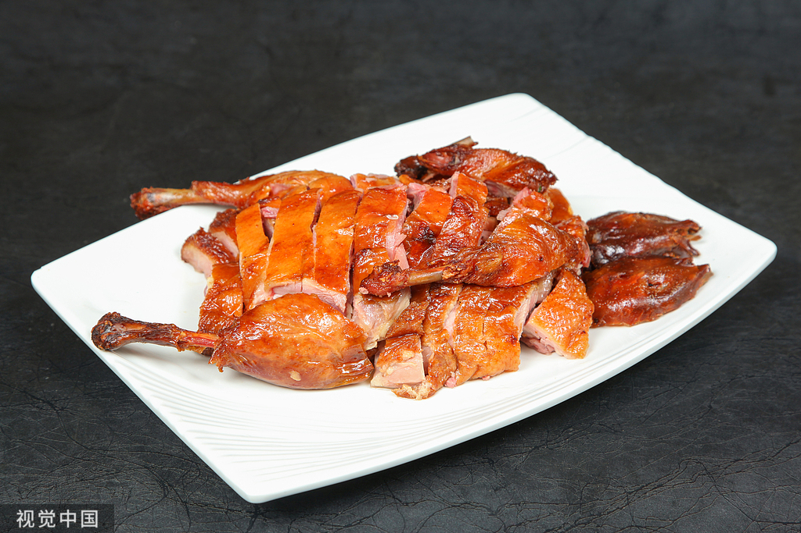
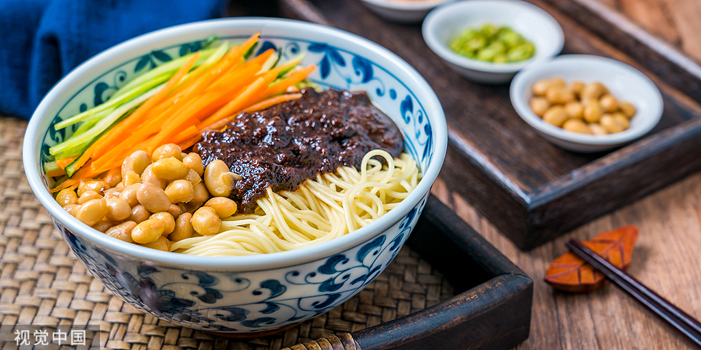
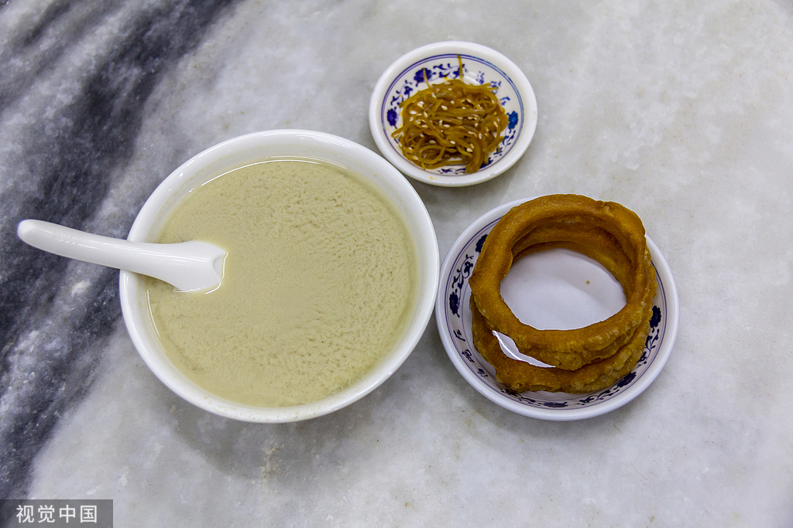
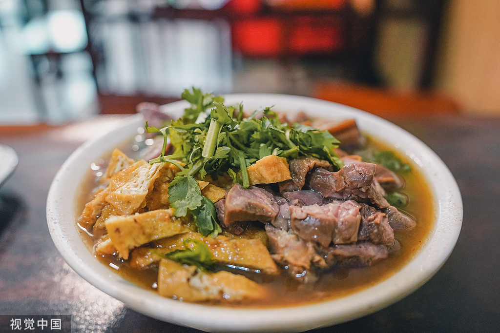
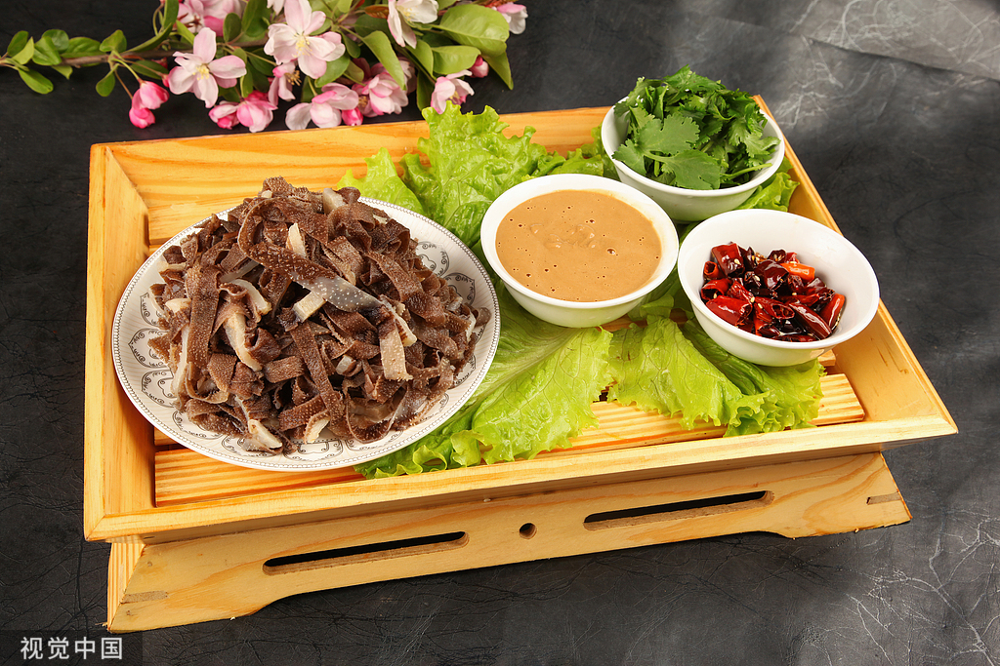
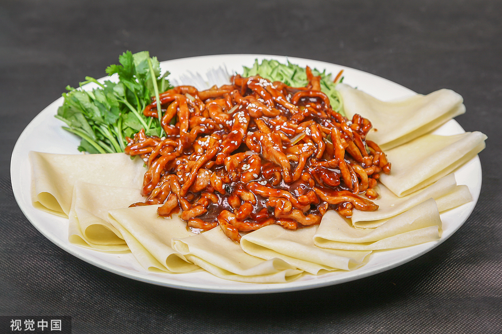
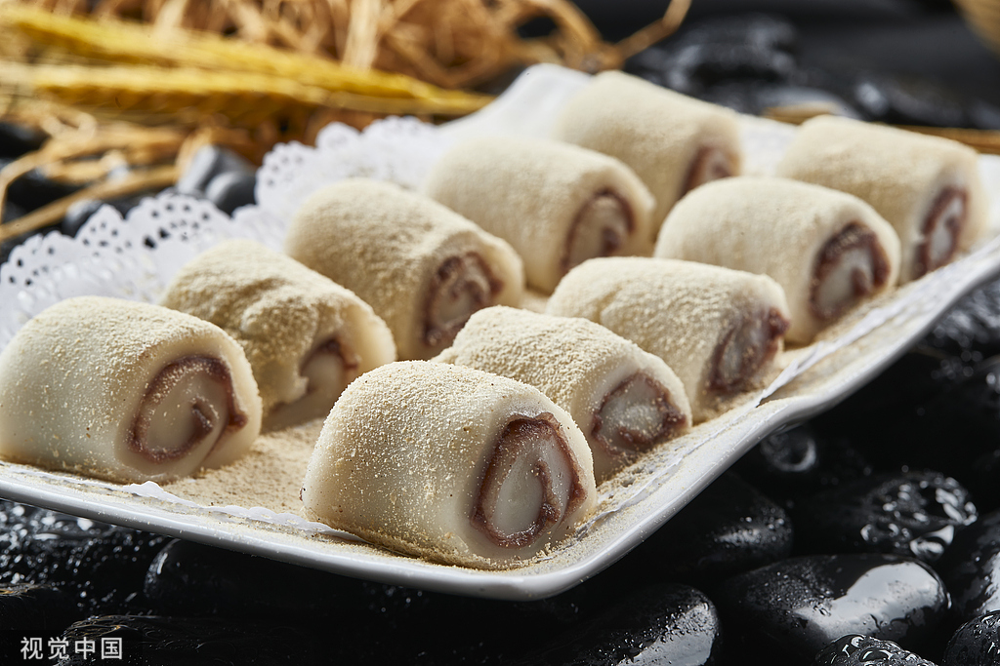
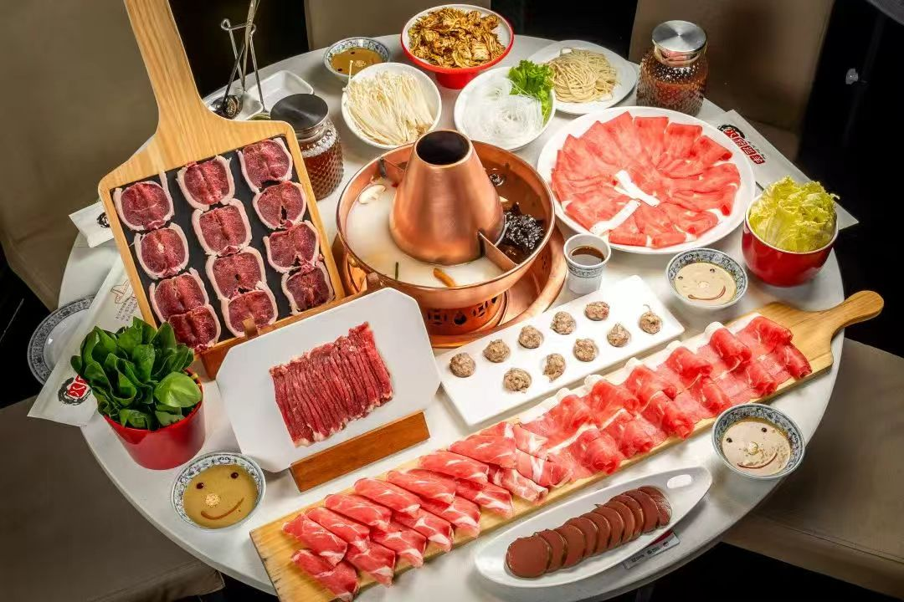
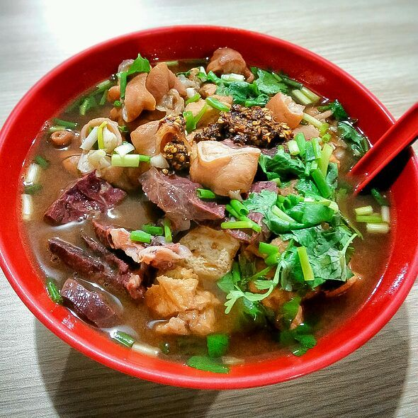
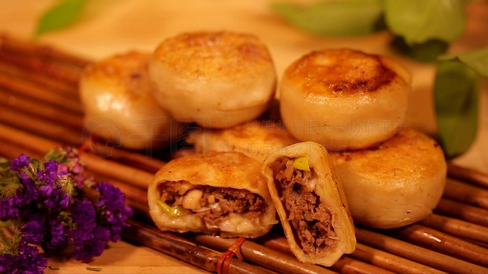

北京烤鸭是具有世界声誉的北京著名菜，以色泽红艳、肉质细嫩、味道醇厚、肥而不腻的特色闻名于世。
历史缘由：
- 明初年间，老百姓爱吃南京板鸭，皇帝也爱吃，据说明太祖朱元璋就“日食烤鸭一只”。
- 宫廷里的御厨们研制出了叉烧烤鸭和焖炉烤鸭这两种。
- 随着明成祖（即朱棣）篡位迁都北京后，也顺便带走了不少南京里烤鸭的高手。
- 在嘉靖年间，烤鸭就从宫廷传到了民间，老“便宜坊”烤鸭店就在菜市口米市胡同挂牌开业，这也是北京第一家烤鸭店。
- 在1864年，京城名气最大的“全聚德”烤鸭店也挂牌开业，烤鸭技术又发展到了“挂炉”时代。
吃法三则：
- 第一种吃法：将那又酥又脆的鸭皮蘸了细细的白糖来吃。
- 第二种吃法：甜面酱加葱条，可配黄瓜条、萝卜条，用筷子挑一点甜面酱，抹在荷叶饼上，放几片烤鸭盖在上面，再放上几根葱条、黄瓜条或萝卜条，将荷叶饼卷起食用。
- 第三种吃法：蒜泥加甜面酱，也可配萝卜条等，用荷叶饼卷食鸭肉。
文化特色：
- 北京烤鸭以其严格的选料、精细的烤制技术、独特的风味和多样化的食用方式而闻名中外。
- 它具有外形美观、皮酥肉嫩、肥而不腻等特点，葱花和酱料的搭配使其在中餐中独树一帜。
- 品尝烤鸭时，口感皮肉并重，甚至皮重于肉。鸭皮酥脆利口，瘦肉细腻香嫩，肥肉则油而不腻。
- 享用完烤鸭之后，鸭架子可以带回家炖白菜或熬汤。另外，餐厅还会提供炸鸭架子作为佐酒佳肴。
返回主页面

老北京炸酱面是北京市传统小吃，属北京菜系，在京津冀地区广为流传。该菜品以面条为主料，搭配炸酱与时令菜码拌制而成。
特点：
- 核心酱料选用肥瘦相间的五花肉丁，配以干黄酱和甜面酱混合炒制，经慢火熬煮形成深褐色酱料。
- 面条多用手擀面或机制切面，煮熟后过水保持筋道口感。
- 炸酱面的菜码包含黄瓜丝、黄豆芽、心里美萝卜丝等十余种时令蔬菜，按季节调整种类。
- 食用时需搭配腊八蒜与腊八醋。
- 其酱香浓郁的风味源自传统"小碗干炸"技法，讲究油酱分离、文火慢熬。
返回主页面

豆汁儿是老北京独具特色的传统小吃，根据文字记载有300年的历史。豆汁是以绿豆为原料，将淀粉滤出制作粉条等食品后的剩余残渣进行发酵产生的，具有养胃、解毒、清火的功效。
发展：
- 豆汁儿本来是北京普通百姓的最爱。
- 乾隆十八年（1754年），豆汁成了宫廷的御膳，乾隆皇帝命人把豆汁儿引入宫廷，并召集群臣共同品尝这民间饮品。
特色：
- 豆汁儿极富蛋白质、维生素C、粗纤维和糖，并有祛暑、清热、温阳、健脾、开胃、去毒、除燥等功效。
- 豆汁是用绿豆做原料，经过烫豆，磨豆，淀粉分离，发酵等一系列工序制作而成。
- 如果趁热喝，味道甜中带酸，酸中有涩，滋味独特；再就着咸菜丝、焦圈、烧饼之类就更有味道了。
- 老北京人爱喝豆汁，或者直接买来生豆汁回家自己熬，一般冬天都这么喝；或者是到庙会和街头的豆汁摊儿上去喝，一般夏天这么喝。
返回主页面

炒肝是北京市传统小吃，属京菜，起源于宋代“熬肝”“炒肺”，清朝同治年间由前门会仙居改良“白水杂碎”创制，以猪大肠为主料、猪肝为辅料，经煮制勾芡而成，具有汤汁油亮、蒜香浓郁的特点。
菜品由来：
- 清代炒肝的制售者有铺面和肩挑两种。
- 清朝同治年间，前门鲜鱼口胡同的会仙居发明不勾芡方法制做炒肝，被认为是炒肝的创制者。
- 名炒肝儿，其实以猪肥肠为主，猪肝只占1/3。
- 制作方法是先将猪肠用碱、盐浸泡揉搓，用清水加醋洗净后再煮，烂熟后切成5分长的小段，俗称“顶针段”。
- 鲜猪肝洗净，用刀斜片成柳叶形的条。
营养价值：
- 猪肝含有丰富的铁、磷，是造血不可缺少的原料。
- 猪肝中富含蛋白质、卵磷脂和微量元素，有利于儿童的智力发育和身体发育。
- 猪肝中含有丰富的维生素A，常吃猪肝，可逐渐消除眼科病症。
- 据近代医学研究发现，猪肝具有多种抗癌物质，如维生素C、硒等，而且肝脏还具有较强的抑癌能力和抗疲劳的特殊物质。
返回主页面

北京爆肚是以牛肚或羊肚为原料的传统京味小吃，通过沸水快速爆熟并佐以特制麻酱调料，呈现鲜嫩香脆的独特口感。老北京素有"要吃秋，有爆肚"的食俗，将立秋食用爆肚与秋季进补传统相结合。
主要原料：
- 鲜牛肚
口味特点：
- 鲜嫩香脆
起源时间：
- 清乾隆年间
流行地区：
- 北京城区
食用习俗：
- 立秋应季食用
文化习俗：
- 清代《都门竹枝词》记载"爆肚油肝香灌肠，玉泉当酒冰入唇"，印证其作为市井饮食的代表地位。
- 立秋当日老北京讲究"抢秋膘"，通过食用爆肚补充夏季消耗。
- 品尝时遵循"先鲜后脆最后嫩"的顺序，传统食客多配二两白酒佐餐。
营养价值：
- 每百克牛肚蛋白质含量达14.5克，脂肪仅1.6克。
- 中医认为其具健脾胃功效，适合夏秋季节调理肠胃。
- 老字号店铺每日早晨精选检疫合格鲜肚，经物理揉搓清洗后入菜，确保食材安全。
蘸料配置：
- 传统蘸料以二八酱（芝麻酱与花生酱2:8配比）为基础，加入酱豆腐汁、韭菜花、生抽进行调配。
- 现制辣椒油需用温水浸泡后的干辣椒低温煸香。
- 调料配制强调"澥酱"工艺：顺时针搅动芝麻酱至黏稠度适中，滴落时纹路缓慢消散为佳。
返回主页面

京酱肉丝（Sauteed Shredded Pork in Sweet Bean Sauce）是北方传统家常菜，属于东北菜、北京菜系，流行于北京及东北地区。该菜以猪里脊肉为主料，配以甜面酱、葱段、豆腐皮等辅料，采用"酱爆"技法烹制而成，具有咸甜适中、酱香浓郁、色泽红亮的特点。
菜品历史：
- 相传二十世纪三十年代，北京紫禁城东北方约4里地的一个大杂院里，住着一个从东北来的陈老汉，和孙子相依为命，靠做豆腐维生。
- 有一次，陈老汉把猪肉挑出瘦的，切成很薄的片，下锅炒并放豆酱炒好，没有面饼还有点豆腐皮，切成方块，照猫画虎就做好了"烤鸭"，孙子用豆腐皮卷着大葱和"烤鸭"吃的那香就别提有多么高兴了，爷俩度过了一个幸福的春节。
- 孙子长大后，到全聚德学徒，成了一名水平不错的厨子，烤鸭也是常吃了，却总体会不到第一次吃烤鸭的感受。后来，经过陈老汉的指点，他孙子对菜品不断改进，才有了现今酱香浓郁，肉丝细嫩的京酱肉丝。
菜品特色：
- 京酱肉丝精选里脊肉为主料，用酱爆烹制而成。
- 食用时辅以葱丝、腐皮，口味咸甜适中，酱香浓郁，风味独特。
制作工艺：
- 菜品选用里脊肉切丝后经盐、料酒、蛋清等腌制滑油，再与甜面酱翻炒收汁。
- 常搭配葱丝、黄瓜丝用豆腐皮或春饼卷食，亦可搭配米饭或馒头食用。
营养价值：
- 该菜蛋白质及钙、铁含量较高，肉丝软嫩易消化，适合老年人食用。
- 猪肉含有丰富的蛋白质及脂肪等成分，具有补虚强身，滋阴润燥、丰肌泽肤的作用。
- 大葱含有挥发油，油中主要成分为蒜素，又含有二烯内基硫醚、草酸钙。此外，还含有脂肠、胡萝卜素、维生素B和C、烟酸、钙、镁、铁等成分。
基本信息：
- 中文名：京酱肉丝
- 外文名：Sauteed Shredded Pork in Sweet Bean Sauce
- 分类：北方菜
- 口味：咸甜、酱香
- 主要食材：猪里脊，甜面酱、葱段、豆腐皮、黄瓜、胡萝卜
- 工艺：煎炒
- 制作时长：30分钟
- 主要调料：料酒、蚝油、盐、生抽、蛋清、淀粉、酱油、白糖
- 流行地区：北京、东北地区
返回主页面

驴打滚，又称豆面糕，是中国东北地区、老北京和天津卫传统小吃之一，成品黄、白、红三色分明，煞是好看。因其最后制作工序中撒上的黄豆粉，犹如老北京郊外野驴撒欢打滚时扬起的阵阵黄土，因此而得名"驴打滚"。1997年，这一美食获得了"中华名小吃"的称号。
基本信息：
- 中文名：驴打滚
- 外文名：Fried chop rice cake Rolling donkey
- 口味：软糯可口 香甜美味
- 主要食材：大黄米面，黄豆面，澄沙，白糖，香油，桂花等等
- 流行地区：天津、北京、东北等地区
- 别名：豆面糕、豆面卷子
历史习俗：
- 豆面卷子起源于东北地区，在北京称驴打滚，是东北地区以及北京小吃中的古老品种之一。
- 清人写的《燕都小食品杂咏》中记载："红糖水馅巧安排，黄米成团豆里埋，何事群呼驴打滚，称名未免近诙谐。"
- 北京人食"驴打滚"（豆面糕）的历史悠久，据张江裁写的《燕京民间食货史料杆》中记载称："驴打滚，乃用黄米粘面蒸熟，裹以红糖水为馅，滚于炒豆面中，使成球形。"
- 自古以来承德地区就盛产一种黍米，据《热河志·物产》记载："黍，土人称为黄米"。这种黍米，性粘，承德叫黄米，可闷干饭，或碾成粉用来做粘豆包、年糕和"驴打滚"。
- 喜吃粘食本来是满族人的传统，因为满族的狩猎生活，经常是早出晚归，吃粘食耐饿。
- 现各家小吃店一年四季都有供应，但大多数已不用黄米面，改用江米面了，因外滚黄豆粉面，其颜色仍为黄色，是群众非常喜爱的一种小吃。
制作流程：
- 原料有大黄米面、黄豆面、澄沙、白糖、香油、桂花、青红丝和瓜仁。
- 制作流程分为制坯、和馅、成型三道工序。
- 做好的"驴打滚"外层粘满豆面，呈金黄色，豆香馅甜，入口绵软，别具风味。
传说：
- 据说慈禧吃烦了宫里的食物，想尝点儿新鲜玩意儿。于是御膳大厨左思右想，决定用江米粉裹着红豆沙做一道新菜。
- 新菜刚一做好，便会有一个叫小驴儿的太监来到了御膳厨房，谁知这小驴儿一个不小心，就把刚刚做好的新菜碰到了装着黄豆面的盆里。
- 大厨没办法，只好硬着头皮将这道菜呈到慈禧太后的面前。慈禧太后一吃这新玩意儿觉得味道还不错，就问大厨："这个东西叫什么呀？"
- 大厨想了想，都是那个叫小驴儿的太监闯的祸，于是就跟慈禧说："这叫‘驴打滚’。"从此，就有了"驴打滚"这道小吃。
营养价值：
- 豆馅入口即化，香甜入心，黄豆面入嘴后可以不嚼，细细品，是老少皆宜的传统风味小吃。
- 经常食用驴打滚有助于健脾益胃、促进排尿、缓解肿胀，还有通气除烦的功效。
返回主页面

涮羊肉，又称羊肉火锅，是北方冬令经典美食。以铜锅炭火为佳，清汤为底，突出羊肉本味。精选绵羊后腿、上脑等部位，切为薄如纸的肉片，入沸汤中一涮即熟，蘸秘制麻酱小料，佐以糖蒜、烧饼，肉嫩不膻，暖身滋补，尽显豪迈食风。
网友评价：
- "手切鲜羊肉立盘不掉，口感弹嫩，麻酱香味太正了！传统炭火铜锅氛围感十足。"
- "羊肉品质超群，清水锅底才能考验真本事，搭配现炸辣椒油，香而不辣，绝配！"
餐馆推荐：
- 东来顺饭庄（王府井店）：东城区王府井大街，百年老字号，以传统炭火铜锅和刀工精湛的手切羊肉著称。
- 满福楼：西城区地安门内大街，注重精选锡盟羊肉，以"手切鲜羊肉"和浓郁秘制麻酱小料备受赞誉。
返回主页面

卤煮火烧是起源于北京南城的传统小吃，以其浓郁热烈的风味深受喜爱。它以猪肠、猪肺、炸豆腐等为主料，用多年老汤长时间卤制，火烧戗面入味。成品汤汁醇厚，内脏处理得毫无异味，软烂中带着嚼劲，火烧吸饱汤汁，是充满市井烟火气的饱腹美味。
网友评价：
- "老汤味道太正了！肠子给得足，处理得干净，火烧泡得透又不失筋道，一碗下去特别满足。"
- "地道的老北京味儿，环境就是接地气，桌上蒜泥辣椒自己随便加，吃得就是这口酣畅淋漓。"
餐馆推荐：
- 小肠陈饭庄（南横街店）：西城区南横东街，卤煮世家，被誉为卤煮界的"金字招牌"，味道最为传统正宗。
- 门框胡同百年卤煮（新街口店）：西城区赵登禹路，分店众多，汤浓料足，是许多游客和 locals 常去的选择。
返回主页面

门钉肉饼是北京传统清真小吃，因其形似古代城门上的铜钉而得名。它以牛肉大葱为馅，面皮半发面，煎烙而成。成品色泽金黄，外皮酥脆，内里肉汁饱满滚烫，口感厚实，肉香浓郁。其精髓在于趁热食用，品尝时需先咬小口吸吮汤汁，以免烫口，是极具满足感的市井美味。
网友评价：
- "皮薄馅大，一口爆汁！牛肉馅又鲜又嫩，蘸上醋和辣椒油，香而不腻，每次都得排队。"
- "真正的老手艺，饼的厚度和煎的火候恰到好处，汤汁饱满，肉香扑鼻，就是记忆里的味道。"
餐馆推荐：
- 宝瑞门钉肉饼店：东城区朝阳门北小街，多年老店，以肉饼汁多肉鲜、价格亲民著称。
- 祥云轩：西城区牛街输入胡同，清真老字号，其门钉肉饼以传统工艺和地道风味备受推崇。
返回主页面